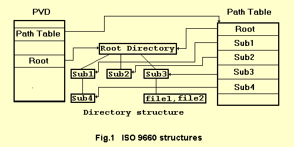

| |
|
|
| |
-
Reading Data CD -
|
|
| |
Primary Volume Descriptor.
The Directory Structure
The Path Table
Joliet Extension to ISO 9660
Resume |
|
| |
CDRoller considers Data CD as CD ( CD-R ) media written in one of
the next formats: CD-ROM (Yellow book), CD-ROM XA, Mixed-Mode or
CD-Extra. To read CD contents correctly ISO 9660 requirements should
be considered at first. ISO 9660 is a worldwide standard specifying
the logical format for files and directories on a Data CD.

ISO 9660 data structures fall into three main categories: the
Volume Descriptors, the Directory Structures, and the Path Tables.
These structures are interrelated as shown in Fig.1. The Volume
Descriptor tells us where the Directory structure and the Path
Table are located, the Directories tell us where the actual files
are located, and the Path Table gives us short cuts to each directory.
Primary Volume Descriptor.
There are currently four types of Volume Descriptors defined in
ISO 9660. Only one of them, the Primary Volume Descriptor, is
commonly used. The other types are the Boot Record, the Supplementary
Volume Descriptor, and the Volume Partition Descriptor. The Boot
Record can be used for systems that must perform some type of
initialization before the user can access the volume, although
ISO 9660 does not specify what information must be in the Boot
Record or how it is to be used. The Supplementary Volume Descriptor
(SVD) can be used to identify an alternate character set for the
use by systems that do not support the ISO 646 character set.
The Joliet specification utilizes
SVD particularly to specify a set of files recorded within Unicode
character set. The Volume Partition Descriptor can be used to
divide the volume logically into smaller volume partitions, although
ISO 9660 does not specify how to do this, only that it can be
done.
The Primary Volume Descriptor (PVD) is the starting point in
identifying a CD-ROM , it is recorded starting at Logical Sector
16 (which corresponds to two seconds and sixteen sectors into
the CD, 00:02:16).
The PVD fields used by CDRoller are shown in Table 1.
|
|
| |
Table 1.
| Byte Position |
Field Name |
Content |
| 1 |
Volume Descriptor
Type |
1 |
| 2 to 6 |
Standard Identifier |
CD001 |
| 41 to 72 |
Volume Identifier |
d-characters allowed (1) |
| 81 to 88 |
Volume Space Size |
Number of logical blocks in the Volume |
| 129 to 132 |
Logical Block Size |
The size in bytes of a Logical Block. Most ISO
9660 discs use a Logical Block Size of 2048, the same as Sector
Size |
| 133 to 140 |
Path Table Size |
Length in bytes of the Path Table |
| 141 to 144 |
Location of Type
L Path Table |
Logical Block Number of first Block allocated
to the Type L Path Table, Type L meaning multiple byte numerical
values are recorded with least significant byte first. This
value is also recorded with least significant byte first. |
| 149 to 152 |
Location of Type
M Path Table |
Logical Block Number of first Block allocated
to the Type M Path Table, Type M meaning multiple byte numerical
values are recorded with most significant byte first. This
value is also recorded with most significant byte first. |
| 157 to 190 |
Directory record
for Root Directory |
This is the actual directory record for the
top of the directory structure. See the section on directory
records for the format of this data. |
| 319 to 446 |
Publisher Identifier |
Identifiers who provided the actual data contained
in the files. a-characters allowed. |
| 447 to 574 |
Data Prepare Identifier |
Identifiers who performed the actual creation
of the current volume. a-characters allowed. |
| 575 to 702 |
Application Identifier |
Identifies the specification of how the data
in the files are recorded. For example, this field might contain
SGML if the files were recorded according to the Standard
Generalized Markup Language. |
| 703 to 739 |
Copyright File Identifier |
Identifies the file in the root directory that
contains copyright notice for this volume. If there is no
copyright file, this field should contain all spaces. |
| 740 to 776 |
Abstract File Identifier |
Identifies the file in the root directory that
contains the abstract statement for this volume. If there
is no abstract file, this field should contain all spaces. |
| 777 to 813 |
Bibliographic File
Identifier |
Identifies the file in the root directory that
contains bibliographic records. If there is no bibliographic
file, this field should contain all spaces. |
|
|
| |
Notes.
(1) d-characters are: A-Z, 0-9, _ (see ISO-9660:1988, Annex A,
Table 15)
(2) a-characters are: A-Z, 0-9, _, space, !, ", %, &, ', (, ),
*, +, ,, -, ., /, :, ;, <, =, >, ? (see ISO-9660:1988, Annex A,
Table 14)
The Directory Structure.
The ISO 9660 directory structure is organized in a hierarchical
manner. At the top of the hierarchy is the Root Directory, the
location of which is identified in the Primary Volume Descriptor.
When drawn hierarchically, the directory structure resembles the
roots of a tree, with the Root directory at the top of the structure,
as shown in Fig.2
As shown in Fig. 1, there are distinct levels in this hierarchy.
The Root Directory is the only directory at level 1. In the example
illustrated by Fig.1, subdirectories Sub1, Sub2 and Sub3 are at
level 2, subdirectory Sub4 and the files file1 and file2 are at
level 3. To insure compatibility, ISO 9660 imposes a limit of
eight levels to the depth of the directory structure.
Every file and directory in an ISO 9660 Volume has an identifying
name associated with it. This name is called the File Identifier.
The File Identifier must also meet the following conditions:
If the File
Name has no characters, then the File Name Extension must have
at least one character.
If the File
Name Extension has no characters, then the File Name must have
at least one character.
The sum of
the lengths of the File Name and the File Name Extension cannot
exceed 30.
ISO 9660 also imposes a limit on the length of the path
to each file. The length of the path is the sum of the lengths
of all relevant directories , the length of the File Identifier,
and the number of relevant directories. The length of the path
cannot exceed 255.
A directory in an ISO 9660 volume is recorded as a file containing
a set of directory records. Each directory record describes a
file or another directory. Every directory has a parent directory.
The Root directory's parent is the Root directory itself. Each
directory also contains a record for its parent directory. A given
directory may contain entries for several files as well as for
several directories, all of which have the same parent.
The contents of directory record are shown in Table 2.
|
|
| |
Table 2.
| Byte Position |
Field Name |
Content |
| 1 |
Length of directory
Record |
Bytes |
| 2 |
Extended Attribute
Record Length |
Bytes - this field refers to the Extended Attribute
Record, which provides additional information about a file
to systems that know how to use it (for example: this field
is used in Apple extension to ISO9660). |
| 3 to 10 |
Location of Extent |
This is the Logical Block Number of the first
Logical Block allocated to the file |
| 11 to 18 |
Data Length |
Length of the file section in bytes |
| 19 to 25 |
Recording Date and
Time |
Represented by seven bytes:
1: Number of years since 1900
2: Month of the year from 1 to 12
3: Day of Month from 1 to 31
4: Hour of the day from 0 to 23
5: Minute of the hour from 0 to 59
6: Second of the minute from 0 to 59
7: Offset from Greenwich Mean Time (GMT) in number of 15 minute
intervals from -48(West) to +52(East).
Note, while detecting Volume creation Date and Time CD Roller
utilizes this field from Root Directory Record of PVD. |
| 26 |
File Flags |
One Byte, each bit of which is a Flag:
0 - File is Hidden if this bit is 1
1 - Entry is a Directory if this bit is 1 .
Bits 2..7 are not considered by CDRoller. |
| 27 |
File Unit Size |
This field is only valid if the file is recorded
in interleave mode. Otherwise this field is 0. Note, if this
field is not 0, that record is ignored by CDRoller. |
| 28 |
Interleave Gap Size |
This field is only valid if the file is recorded
in interleave mode. Otherwise this field is 0. Note, if this
field is not 0, that record is ignored by CDRoller. |
| 29 to 32 |
Volume Sequence Number |
The ordinal number of the volume in the Volume
Set on which the file described by the directory record is
recorded. |
| 33 |
Length of File Identifier
(LEN_FI) |
Byte |
| 34 to (33 + LEN_FI) |
File Identifier |
Interpretation depends on the setting of the
directory bit in the File Flags (bit 1). If set to ZERO, then
the field refers to a File Identifier (file name). If set
to ONE, then the field refers to Directory Identifier (directory
name). |
| 34 + LEN_FI |
Padding Field |
Present only if the length of the File Identifier
is an even number. If present, value is 0 |
| LEN_DR - LEN_SU +
1 |
System Use (LEN_SU) |
Reserved for system use (for example: in Apple
extension to ISO 9660). Note, this field is not considered
by CDRoller |
|
|
| |
The Path Table.
The Path Table indicates to the CDRoller short cut to each directory
on the disc rather than making the program read through each directory
to get to the file it needs. This is done primarily to enhance
performance. For each directory other than the Root directory,
the path table contains a record that identifies the directory,
its parent directory, and its location.
The contents of Path Table record are shown in Table 3.
|
|
| |
Table 3.
| Byte Position |
Field Name |
Content |
| 1 |
Length od Directory
Identifier (LEN_DI) |
Length in Bytes |
| 2 |
Extended Attribute
Record Length |
If an Extended Attribute Record is recorded,
this is the length in bytes. Otherwise, this is 0. |
| 3 to 6 |
Location of Extent |
Logical Block Number of the first Logical Block
allocated to the Directory |
| 7 to 8 |
Parent Directory
Number |
The record number in the Path Table for the
parent directory of this directory |
| 9 to (8 + LEN_DI) |
Directory Identifier |
This field is the same as in the Directory
Record |
| (9 + LEN_DI) |
Padding Field |
Present (0) only if LEN_DI is an odd number |
|
|
| |
Joliet Extension to ISO 9660.
The basic strategy of CD-ROM volume recognition is the Volume
Recognition Sequence, which is a sequence of volume descriptors,
recorded one per sector, starting at Sector 16 in the first track
of the last session on the disc. CDRoller reads these sectors
and chooses a particular volume descriptor from the sequence.
This volume descriptor acts as a kind of anchor upon which the
remainder of the volume is constructed.
To detect the Joliet CDRoller finds the Supplementary Volume
Descriptor (SVD) and checks the Escape Sequences field to compliance
with the following USC-2 escape sequences (hex bytes): (25)(2F)(40)
or (25)(2F)(43) or (25)(2F)(45). After Joliet has been detected,
all identifiers are considered in Motorola ("Big Endian")
format and each character consists of two bytes (Unicode character)
besides.
While accessing Joliet CD CDRoller considers the following rules
of Joliet specification:
The File or
Directory Identifiers may be up to 128 bytes (64 unicode characters)
in length.
For each file
recorded, the sum of the following shall not exceed 240:
- the length of the file identifier;
- the length of the directory identifiers of all relevant directories;
- the number of relevant directories.
Directory Identifiers
may contain file name extensions.
The Directory
Hierarchy may be recorded deeper than 8 levels.
The volume recognition
sequence supports multisession.
Resume.
After new disc has been verified as Data CD, CDRoller reads its
contents by the following steps:
1. To verify type of Data CD the program reads a sequence of
volume descriptors, recorded one per sector, starting at Sector
16 in the first track of the last session on the disc. If Joliet's
type is detected, the reading of all CD contents will be performed
by the rules of Joliet specification. The multisession feature
is also tested at this step.
2. Detecting Logical Block Address (LBA) of Root Directory which
is the top level of Directory Structure and starting point to
create CD Image.
3. The program tries to read Path Tables (L and M types) correctly
to get fast access to each directory.
4. If Path Table is valid, further its data will be utilized
in any access to directory contents such as sub-directories and
(or) files. If both Path Tables have failed , the program should
notice user that creating CD Image is the only way to read
CD contents since the program builds own "Path Table"
when creating CD Image.
|
|
| |
|
|
| |
© 2001 - 2005 CDRoller Soft Co. Ltd. All rights reserved
Web design © 2002 ActiveLink
|
|
|